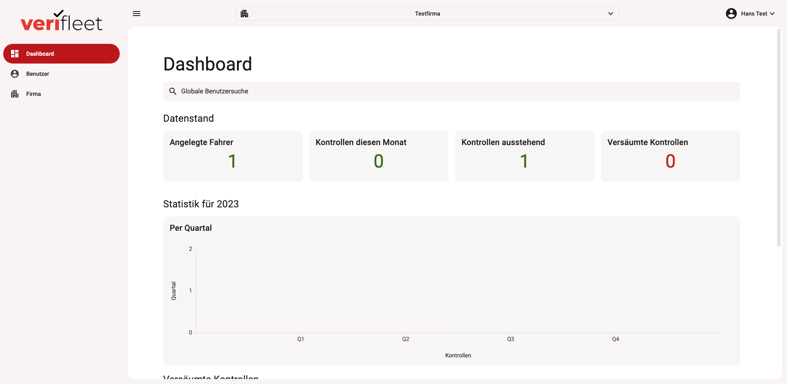

Erste Schritte
Eine Firma anlegen
Melden Sie sich im Backend an.
Klicken Sie links im Menü auf "Firma".

Klicken Sie im unteren Bereich der Stammdaten auf "Sub-Firma" anlegen.
Füllen Sie alle erforderlichen Datenfelder, um die neue anzulegen.

Einen Fahrer anlegen
Fahrer aus Excel importieren
Firmen und Fahrer aus anderen Systemen importieren
Carano
Last modified: 07 Dezember 2023